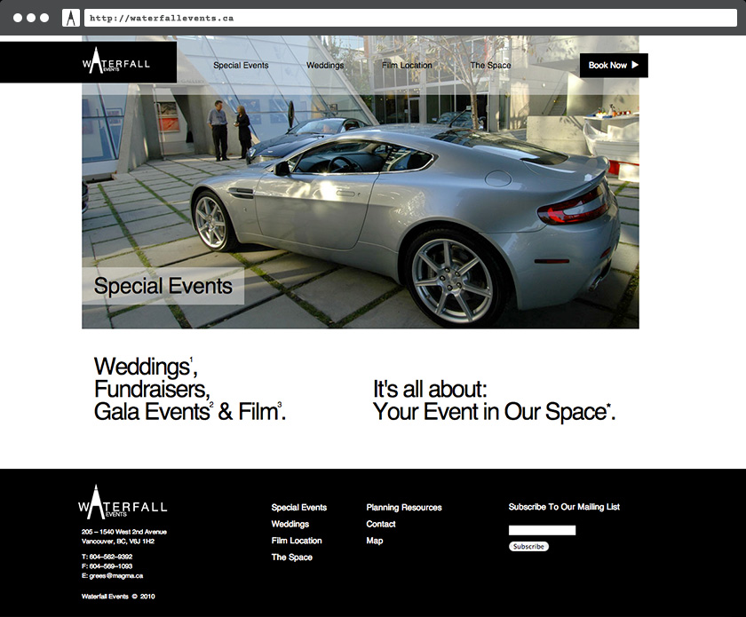

Waterfall Events
Classy and functional. For the owners of the landmark Waterfall Building in Vancouver, BC, the goal was to reach multiple audiences with the same message: 'Your event would look amazing here'.
The Waterfall Building is an architectural landmark designed by West Coast Modernist Arthur Erickson. Built in 2001, the building features glass and concrete construction with lofted concrete volumes set above an open courtyard and glass-enclosed atrium.
The space has been used for numerous events, from gala dinners to shooting locations for mainstream film and television.
The potential of the space was communicated by showcasing images of past events.

Films and music videos were regularly shot on site.

PDF documents of the architectural plans were made available to potential renters along with seating configurations. Each was attached to the appropriate page for download.
The architectural uniqueness of the building was communicated on a dedicated page.

Glass and tableware inventory was also made available in the form of PDF documents, to aid renters with planning their event.
Conclusion
The Waterfall Building is a unique space that can be configured in many ways to support a variety of uses. Through clearly showing ways it was used in the past, future renters were inspired imagine their own events within the space.